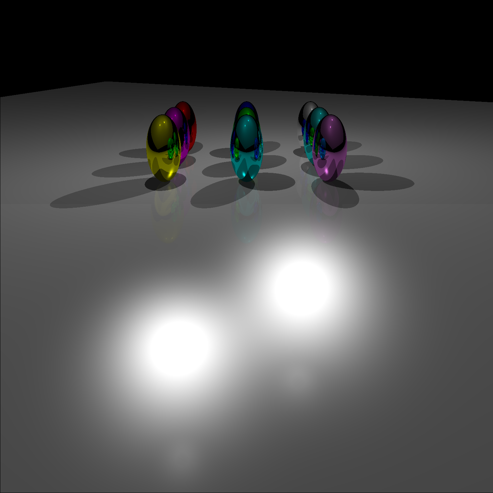
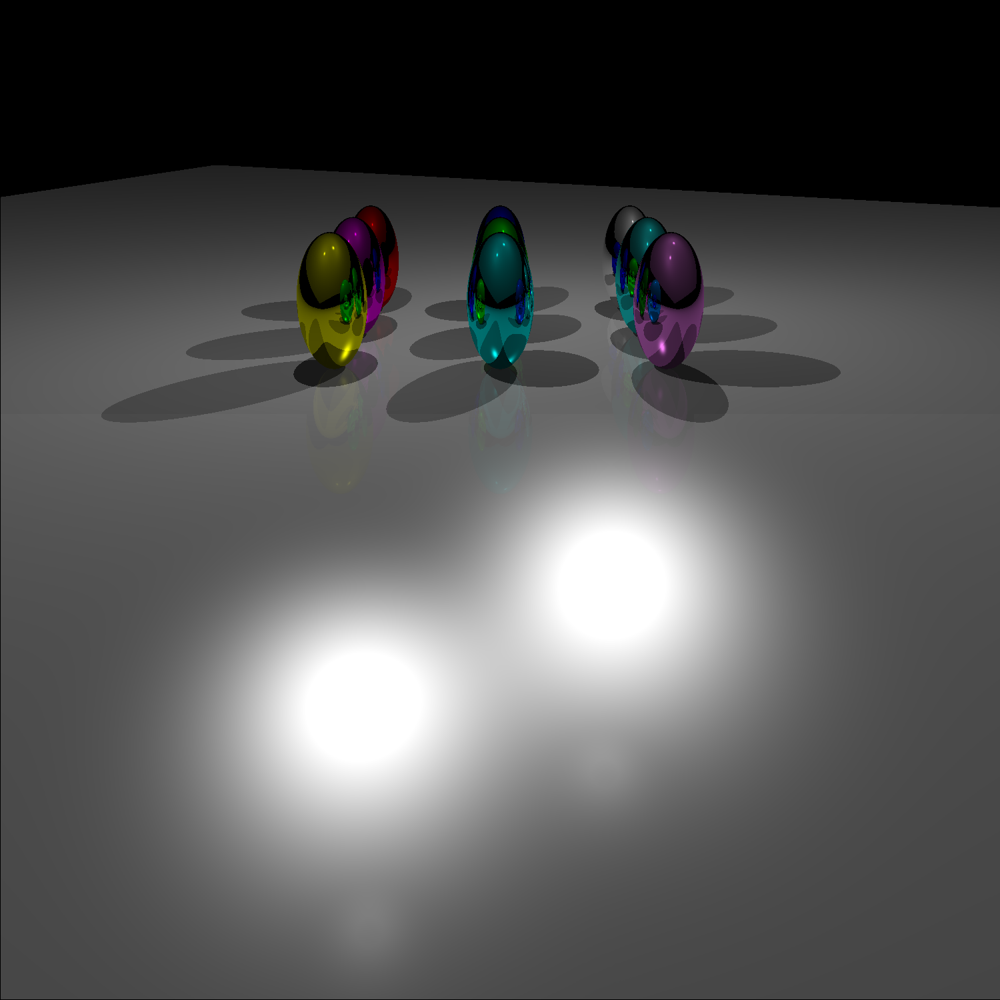

Assignment 4: Ray Tracing
- Two Point Lights
- Directional Diffuse Lighting
- Directional Specular Lighting
- Point Specular Lighting
- Diffuse and Specular Lighting
- Three Different Lights
Hover for more...


 

This is the test case that Professor O'Brien provided. The command line options used to generate this image are:
-ka 0.1 0.03 0.03 -kd 1.0 1.0 1.0 -ks 1.0 1.0 0.0 -pl 4.0 -3.0 -1.0 0.6 0.0 0.6 -pl -4.0 3.0 1.0 0.6 0.6 0.0 -sp 20.0 -image test.png
This is an example of simple diffuse lighing from a directional source. The command line options used to generate this image are:
-sp 50 -ka .1 .1 .1 -kd 0 0 1 -dl -0.4 -0.75 -.6 1 1 1 -image test.png
This is an example of simple specular lighting from a directional source. The command line options used to generate this image are:
-sp 45 -ka .1 .1 .1 -ks .8 .8 .8 -dl -0.1 -0.75 -.6 1 1 1 -image test.png
This is an example of simple specular lighting from a point source. The command line options used to generate this image are:
-sp 45 -ka .1 .1 .1 -ks 1 1 1 -pl 0.4 0.4 2 1 1 1 -image test.png
This is an example of specular and diffuse lighting from a directional source combined to make a realistic looking sphere. The command line options used to generate this image are:
-sp 45 -ka .1 .1 .1 -kd 0 .6 .3 -ks 1 1 1 -dl -0.4 -0.75 -.6 1 1 1 -image test.png
This is an example of three different point lights with different colors shining on the same sphere. The command line options used to generate this image are:
-sp 45 -ka .1 .1 .1 -kd .6 .6 .6 -ks .6 .6 .6 -pl .9 .9 1.5 1 0 0 -pl -.9 .9 1.5 0 1 0 -pl 0 -.9 1.5 0 0 1 -image test.png
This is an example of the toon shading algorithm I implemented. The command line options used to generate this image are:
-sp 45 -ka .01 .01 .01 -kd 0 .7 .5 -ks .6 .6 .6 -dl -0.4 -0.75 -.6 .9 .9 .9 -toon -image test.png
This is an example of the textured shading algorith I implemented. The command line options used to generate this image are:
-ka 0.1 0.03 0.03 -kd 1.0 1.0 1.0 -ks 1.0 1.0 0.0 -pl 4.0 -3.0 -1.0 0.6 0.0 0.6 -pl -4.0 3.0 1.0 0.6 0.6 0.0 -sp 20.0 -image test.png -textured
1. Toon shading can be generated by using the command line option: "-toon".
2. Rough texturing can be generated by using the command line option: "-textured".
3. An image can be generated by using the command line option: "-image filename".